Tutorial
Tutorial.RmdFirst step is load the package spacemodR.
You can install from CRAN or from the github repository
library(spacemodR)Load habitat layers in the Region Of Interest (ROI)
The following examples are given for a specific French situation. The methods are designed to be updated for other countries.
For new regions, new layers or new features, feel free to open an issue at this link: issue link.
Set French Departments
The get_departements_for_roi function identifies the
codes of French departments that intersect with a given Region of
Interest (ROI). This is particularly useful for spatial analyses in
France, where administrative boundaries (like departments) are often
needed to fetch or process geospatial data.
-
roi: Ansforsfcobject representing your region of interest. The function uses only the first geometry (polygon) in the object.
data("roi_metaleurop")
## Or load a ROI via geojson
# roi_metaleurop <- sf::st_read("data/metaleurop_roi.geojson")
dpts <- get_departements_for_roi(roi_metaleurop)Load OCS-GE layers in the Region Of Interest (ROI)
The get_ocsge_data function is designed to download,
extract, and prepare OCS GE (Occupation du Sol à Grande Échelle) version
2 datasets for a specific Region of Interest (ROI).
This function automates the process of fetching spatial data from the French National Geographic Institute (IGN), merging data from all relevant departments, and cropping the result to match the boundaries of your ROI.
Input Parameters:
-
roi: Ansfobject (simple features) defining your region of interest. Only the first feature in the object is used. -
local_cache(optional): A directory path where downloaded archives are stored. If not provided, a temporary directory is used.
The function ensures that the ROI is transformed into the Lambert-93 projection (EPSG:2154), which is the standard coordinate system for French geographic data.
## This function is long to compute so we load the data set
# sf_site <- get_ocsge_data(roi_metaleurop)
data(ocsge_metaleurop)You can then plot the object using for instance the
ggplot2 library which is not included in
spacemodR.
library(ggplot2)
ggplot() +
theme_minimal() +
geom_sf(data=ocsge_metaleurop, aes(fill=code_cs)) +
geom_sf(data=roi_metaleurop, fill=NA, color="red", size=1)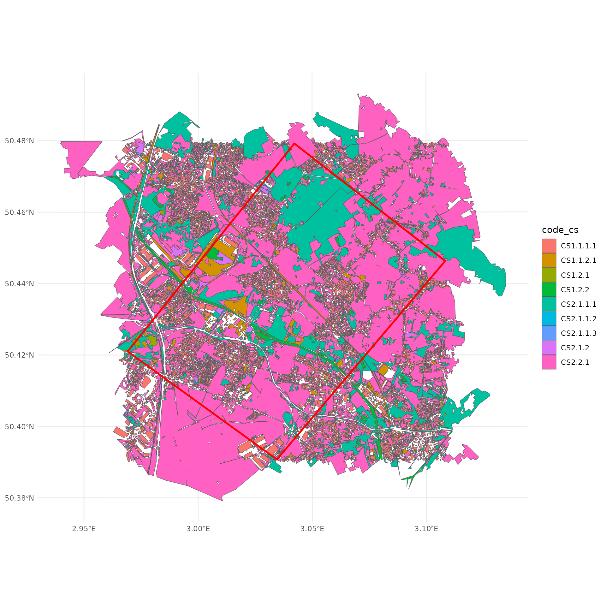
Build a spacemodel
Prepare raster_stack: a stack of raster for ground and
habitats.
Setting habitat from shapefiles (vector maps)
layer_CS2111 = ocsge_metaleurop[ocsge_metaleurop$code_cs == "CS2.1.1.1", ]
layer_CS221 = ocsge_metaleurop[ocsge_metaleurop$code_cs == "CS2.2.1", ]
layer_CS1121 = ocsge_metaleurop[ocsge_metaleurop$code_cs == "CS1.1.2.1", ]The habitat function creates a spatial habitat object,
which inherits from both sf and data.frame
classes.
This object is designed to represent habitat zones and includes
specific attributes: a habitat column (logical, indicating
the presence or absence of habitat), a weight column
(numeric, representing relative importance or weight), and a
geometry column (containing spatial geometries).
If no geometry is provided, the function creates an empty object. It also performs checks to ensure that the lengths of the habitat and weight vectors match the number of geometries and that their types are correct (logical for habitat, numeric for weight).
This function is useful for initializing spatial analyses where distinguishing between habitat and non-habitat zones is essential.
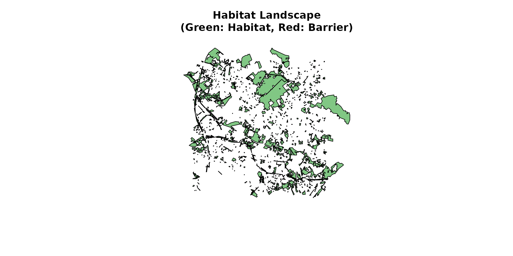
habitat_11 = habitat(layer_CS2111, weight=0.2)
head(habitat_11)
#> Simple feature collection with 1 feature and 2 fields
#> Geometry type: MULTIPOLYGON
#> Dimension: XY
#> Bounding box: xmin: 697049.4 ymin: 7032094 xmax: 709595.3 ymax: 7043419
#> Projected CRS: RGF93 v1 / Lambert-93
#> habitat weight geometry
#> 1 TRUE 0.2 MULTIPOLYGON (((697891.4 70...
habitat_12 = habitat(
layer_CS2111,
habitat=sample(c(TRUE,FALSE), nrow(layer_CS2111), replace=TRUE),
weight=runif(nrow(layer_CS2111), 0, 10)
)
plot(habitat_12)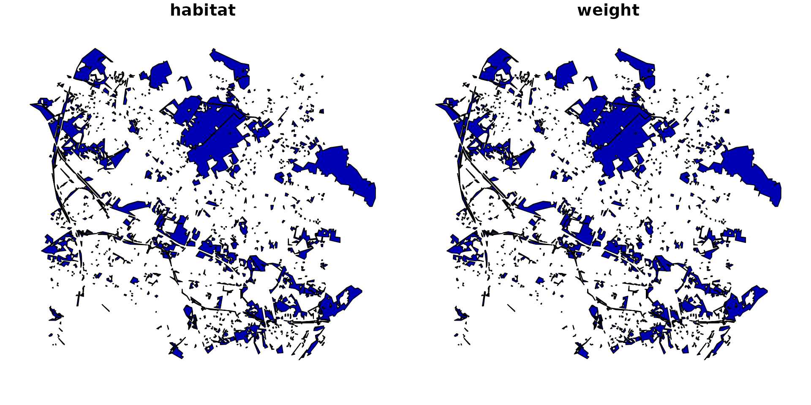
Another option more convenient use of the function for more complex
situation, an idea is the use the function add_habitat.
The add_habitat function is a generic method that adds
habitat zones to an existing habitat object. It takes as input a hab
object of class habitat, an sf object sf_data
containing the geometries to add, and an optional weight parameter
(defaulting to 1) to assign weights to the new geometries. The function
checks that sf_data is indeed an sf object,
then creates a temporary habitat object with the geometries to be added,
marking them as habitat (habitat = TRUE).
If the initial hab object is empty, the new object
becomes the result. Otherwise, the two objects are merged using
dplyr::bind_rows, while preserving the habitat class. This
function is particularly useful for dynamically expanding habitat zones
in a spatial analysis.
habitat_20 = habitat() |>
add_habitat(layer_CS2111)
class(habitat_20)
#> [1] "habitat" "sf" "data.frame"
habitat_21 = habitat() |>
add_habitat(layer_CS2111, weight=0.2)
head(habitat_21)
#> Simple feature collection with 1 feature and 2 fields
#> Geometry type: MULTIPOLYGON
#> Dimension: XY
#> Bounding box: xmin: 697049.4 ymin: 7032094 xmax: 709595.3 ymax: 7043419
#> Projected CRS: RGF93 v1 / Lambert-93
#> habitat weight geometry
#> 1 TRUE 0.2 MULTIPOLYGON (((697891.4 70...
habitat_22 = habitat() |>
add_habitat(layer_CS2111, weight=0.2) |>
add_habitat(layer_CS1121, weight=0.4) |>
add_nohabitat(layer_CS221)
head(habitat_22)
#> Simple feature collection with 3 features and 2 fields
#> Geometry type: MULTIPOLYGON
#> Dimension: XY
#> Bounding box: xmin: 695704.7 ymin: 7031268 xmax: 709595.3 ymax: 7043983
#> Projected CRS: RGF93 v1 / Lambert-93
#> habitat weight geometry
#> 1 TRUE 0.2 MULTIPOLYGON (((697891.4 70...
#> 2 TRUE 0.4 MULTIPOLYGON (((698440.6 70...
#> 3 FALSE 0.0 MULTIPOLYGON (((698052.4 70...
plot(habitat_22)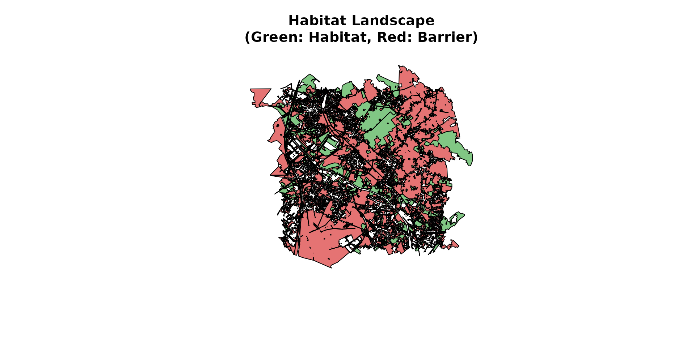
/! WHAT IS AN HABITAT
What we consider habitat is defined by the purpose of
the model.
There is 3 situations: 1. the area where the species cannot go, even just passing (impossible)
A raster of
Defining raster of habitat based on a raster of the ground
Here, we download a raster layer with the interpolation of the ground concentration of cadmium.
# the raster tif file is internal to the spacemodR package
ground_cd <- load_raster_extdata("ground_concentration_cd_compressed.tif")
terra::plot(ground_cd)
Then, it’s the same algorithm to specified habitat and then build rasters.
# prepare a list of OSGE code to make life easier
OCSGE_codes <- list(
forest = c("CS2.1.1.1", "CS2.1.1.2", "CS2.1.1.3", "CS2.1.3"),
grass = "CS2.2.1",
water = "CS1.2.2",
soil = c("CS1.2.1","CS2.1.1.1","CS2.1.1.2","CS2.1.1.3",
"CS2.1.2","CS2.1.3","CS2.2.1","CS2.2.3"),
sealed = c("CS1.1.1.1", "CS1.1.1.2", "CS1.1.2.1")
)
layer_soil_natural = ocsge_metaleurop[ocsge_metaleurop$code_cs %in% OCSGE_codes$soil, ]
layer_soil_artificial = ocsge_metaleurop[ocsge_metaleurop$code_cs %in% OCSGE_codes$sealed, ]
habitat_sol = habitat() |>
add_habitat(layer_soil_natural) |>
add_nohabitat(layer_soil_artificial)
plot(habitat_sol)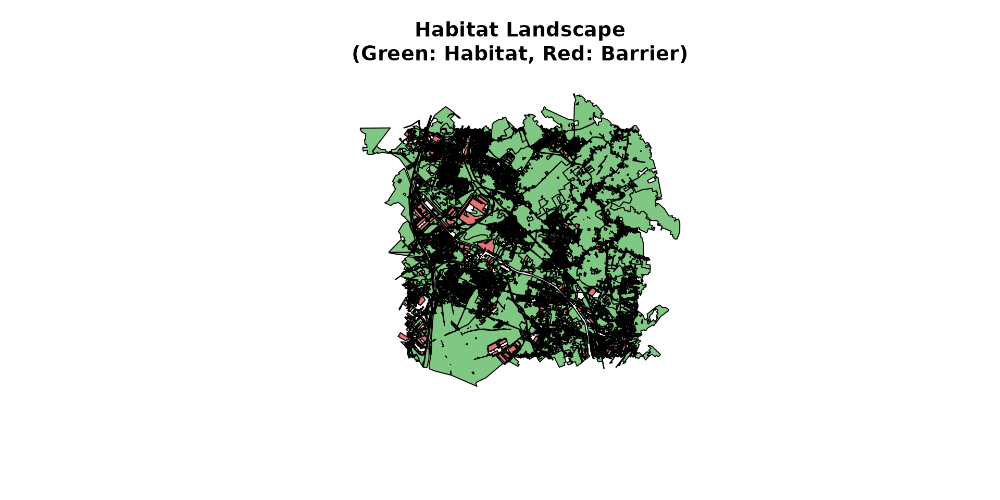
rast_sol <- habitat_raster(ground_cd, habitat_sol)
terra::plot(rast_sol)
rast_10 <- habitat_raster(ground_cd, habitat_10)
terra::plot(rast_10)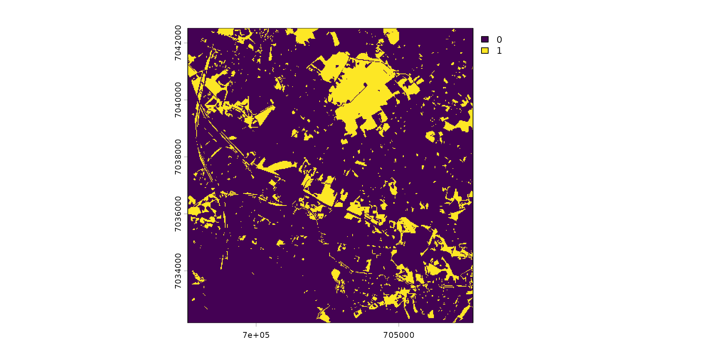
rast_12 <- habitat_raster(ground_cd, habitat_12)
terra::plot(rast_12)
rast_22 <- habitat_raster(ground_cd, habitat_22)
terra::plot(rast_22)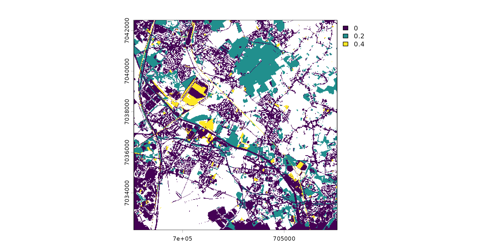
Join all rasters with a single stack
stack_habitat <- raster_stack(
raster_list = list(rast_sol, rast_10, rast_12, rast_22),
names = c("sol", "sp10", "sp12", "sp22")
)
terra::plot(stack_habitat)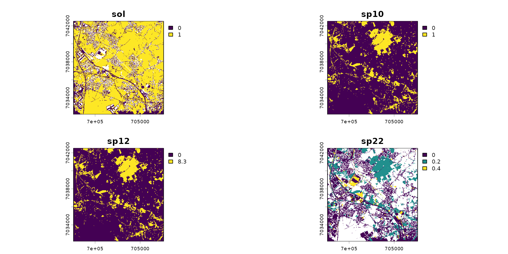
Prepare trophic_df: a data.frame of
trophic web
You can use a data.frame like this:
df_raw <- data.frame(
src = c("sol", "sol", "sp10", "sp12"),
target = c("sp10", "sp12", "sp12", "sp22"),
w = c(2, 3, 2, 1))
trophic_from_df <- trophic(df_raw, from = "src", to = "target", weight = "w")
attr(trophic_from_df, "level")
#> sol sp10 sp12 sp22
#> 1 2 3 4
trophic_df <- trophic() |>
add_link("sol", "sp10", 2) |>
add_link("sol", "sp12", 3) |>
add_link("sp10", "sp12", 2) |>
add_link("sp12", "sp22")
attr(trophic_df, "level")
#> sol sp10 sp12 sp22
#> 1 2 3 4The trophic web can then be computed:
plot(trophic_df, shift=FALSE)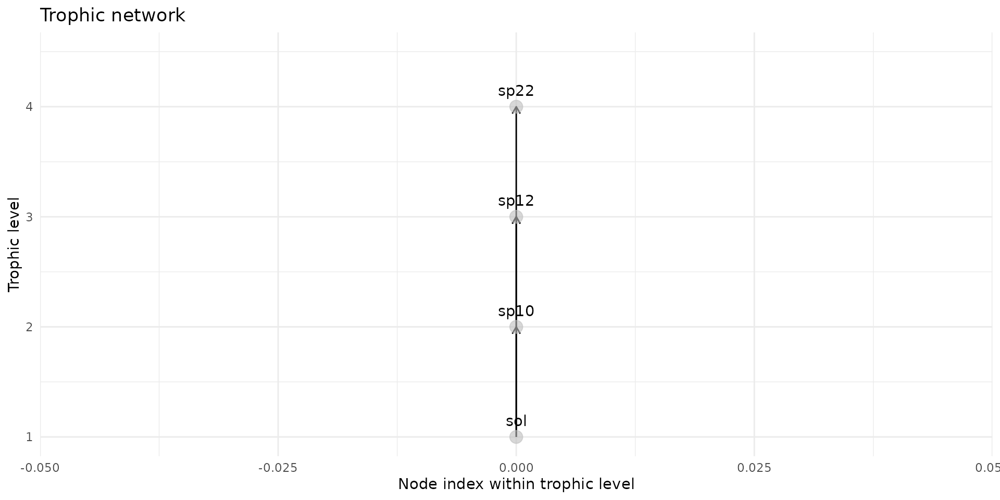
plot(trophic_df, shift=TRUE)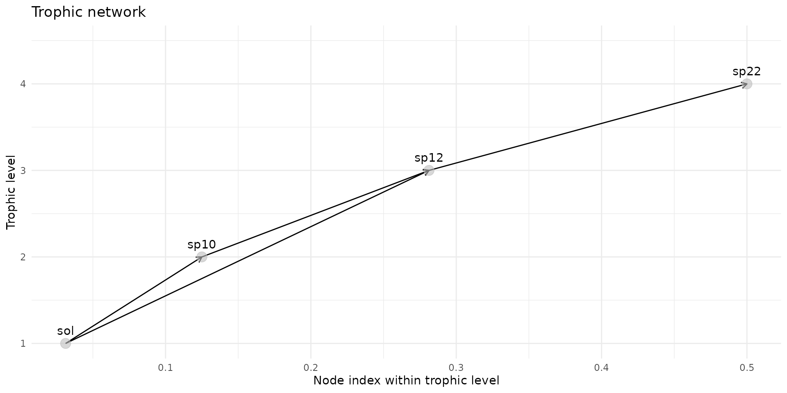
Spacemodel: merge a stack of rasters with a trophic web linking rasters
A spacemodel is a list of two object a raster_stack and
a trophic_graph: - the raster_stack is a stack of rasters
using the terra package and the object
raster_stack - the trophic_graph is a directed
acyclic graph (DAG) to which we can add weight.
spcmdl_habitat <- spacemodel(stack_habitat, trophic_df)
color_habitat <- colorRampPalette(c("white", "#169E19"))(255)
terra::plot(spcmdl_habitat, col=color_habitat)
Spacemodel for Dispersal
Dispersal is independent of trophic link for now since we did not yet implemented a dispersal dependent of the potential trophic links.
k_sp10 <- compute_kernel(radius=10, GSD=25, size_std=1.5)
k_sp12 <- compute_kernel(radius=100, GSD=25, size_std=1.5)
k_sp22 <- compute_kernel(radius=200, GSD=25, size_std=1.5)
spcmdl_dispersal <- spcmdl_habitat |>
dispersal("sp10", method="convolution", method_option=list(kernel=k_sp10)) |>
dispersal("sp12", method="convolution", method_option=list(kernel=k_sp12)) |>
dispersal("sp22", method="convolution", method_option=list(kernel=k_sp22))Plot the dispersal object:
color_dispersal <- colorRampPalette(c("white", "#166C9E"))(255)
terra::plot(spcmdl_dispersal, col=color_dispersal)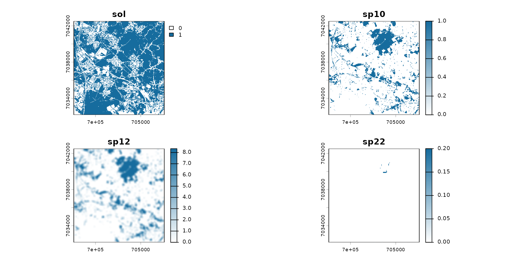
Spacemodel for Exposure
spcmdl_dispersal[["sol"]][] <- ground_cd
terra::plot(spcmdl_dispersal[["sol"]])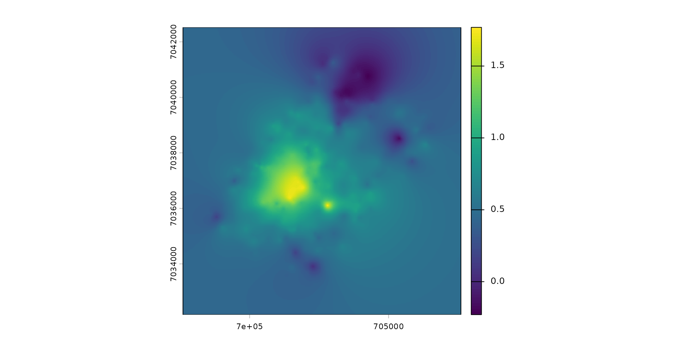
kernels <- list(
sol = NA,
sp10 = k_sp10,
sp12 = k_sp12,
sp22 = k_sp22
)
attr(spcmdl_dispersal, "trophic_tbl")
#> link weight
#> sp10 sol, sp10 2
#> sp12 sol, sp12 3
#> sp121 sp10, sp12 2
#> sp22 sp12, sp22 1
test_intakes <- intake(spcmdl_dispersal,
# General rule: sp12 uptake with factor 3
"sp12" = 3,
# Exception: when sp12 feed on sp10, factor is 5
"sp10 -> sp12" = 5,
# General rule: sp22 has a complex function
"sp22" = ~ x^2 + 10,
# Exception: sol to sp10 is a coef
"sol -> sp10" = 0.1,
default = 1 # for all other default is 1
)
spcmdl_transfer <- transfer(spcmdl_dispersal, kernels, test_intakes)
color_transfer <- colorRampPalette(c("white", "#A33D0A"))(255)
terra::plot(spcmdl_transfer, col=color_transfer)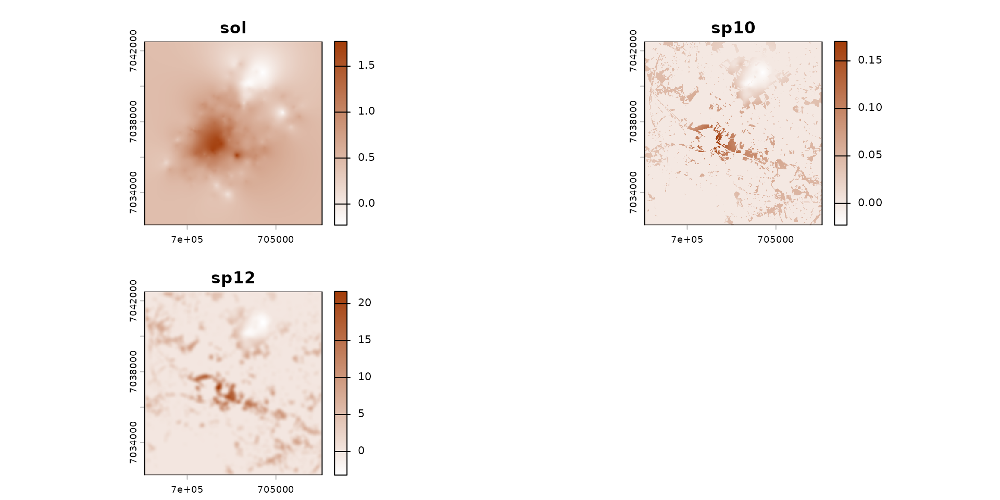
Eco-SSL Example: Build a spacemodel for Eco-SSL
The first step is to build a raster stack with the ground as raster.
ground_cd <- load_raster_extdata("ground_concentration_cd_compressed.tif")
names_hab = c("soil", "plant", "invert", "mamHerb", "mamInsect", "birdInsect")
list_habitat <- lapply(names_hab, function(i) ground_cd)
stack_habitat <- raster_stack(list_habitat, names_hab)
terra::plot(stack_habitat)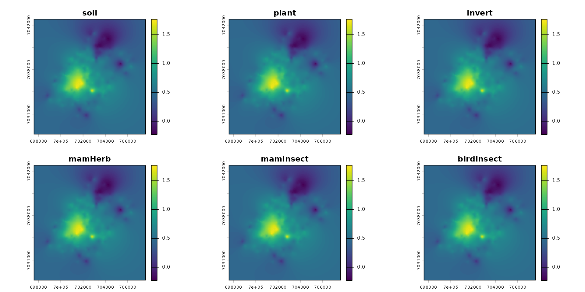
The second step is to build the trophic web, all species connecting directly to the soil.
trophic_df <- trophic() |>
add_link("soil", "plant") |>
add_link("soil", "invert") |>
add_link("soil", "mamHerb") |>
add_link("soil", "mamInsect") |>
add_link("soil", "birdInsect")
attr(trophic_df, "level")
#> soil plant invert mamHerb mamInsect birdInsect
#> 1 2 2 2 2 2
plot(trophic_df)
The third step is to merge the raster stack with the trophic data.frame.
spcmdl_ecossl_h <- spacemodel(stack_habitat, trophic_df)
terra::plot(spcmdl_ecossl_h)
Build the Risk indice
# no dispersal for eco_ssl
ecossl_kernels <- list(
soil = NA, plant = NA, invert = NA,
mamHerb = NA, mamInsect = NA, birdInsect = NA)
ecossl_intakes <- intake(spcmdl_ecossl_h,
"soil -> plant" = ~ 10^x/32,
"soil -> invert" = ~ 10^x/140,
"soil -> mamHerb" = ~ 10^x/73,
"soil -> mamInsect" = ~ 10^x/0.36,
"soil -> birdInsect" = ~ 10^x/0.77,
default = 1, # for all other default is 1
normalize = FALSE # TRUE would weight every link to sum at 1
)
spcmdl_ecossl_risk <- transfer(
spcmdl_ecossl_h,
ecossl_kernels,
ecossl_intakes,
exposure_weighting="potential")A plot of layer with risk threshold color scale.
# Risk colors
breaks_risk <- c(0, 0.1, 0.5, 1, 5, 10, Inf)
cols_risk <- c(
"darkgreen", # 0 - 0.1
"green", # 0.1 - 0.5
"lightgreen", # 0.5 - 1
"yellow", # 1 - 5
"saddlebrown", # 5 - 10
"#4A2C2A" # > 10
)
names_keep <- names(spcmdl_ecossl_risk)[names(spcmdl_ecossl_risk) != "soil"]
spcmdl_ecossl_risk_sub <- spcmdl_ecossl_risk[[names_keep]]
terra::plot(spcmdl_ecossl_risk_sub,
breaks = breaks_risk,
col = cols_risk)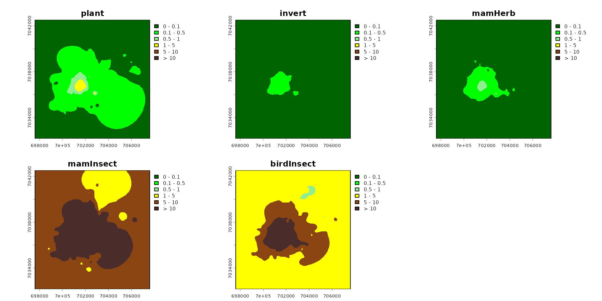
poly <- roi_metaleurop
poly_vect <- terra::project(terra::vect(poly), terra::crs(spcmdl_ecossl_risk_sub))
rast_crop <- terra::crop(spcmdl_ecossl_risk_sub, poly_vect)
rast_final <- terra::mask(rast_crop, poly_vect)
terra::plot(rast_final,
breaks = breaks_risk,
col = cols_risk)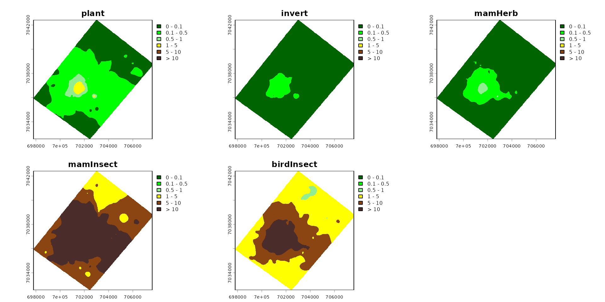
checking Eco-SSL
For this very simple example, a simple check can be done, because Eco-SSL is a computing of a risk based on the amount in soil:
check_ecossl_risk = list(
"soil -> plant" = 10^ground_cd/32,
"soil -> invert" = 10^ground_cd/140,
"soil -> mamHerb" = 10^ground_cd/73,
"soil -> mamInsect" = 10^ground_cd/0.36,
"soil -> birdInsect" = 10^ground_cd/0.77
)
r_check_ecossl_risk = terra::rast(check_ecossl_risk)
terra::plot(r_check_ecossl_risk,
breaks = breaks_risk,
col = cols_risk)